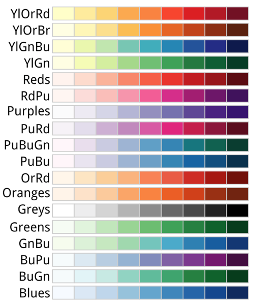
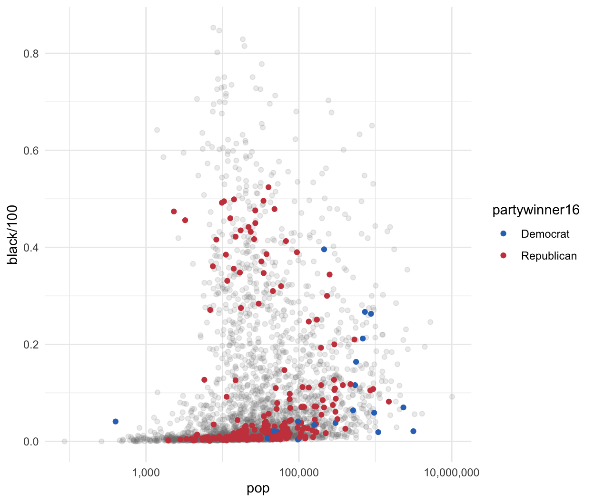
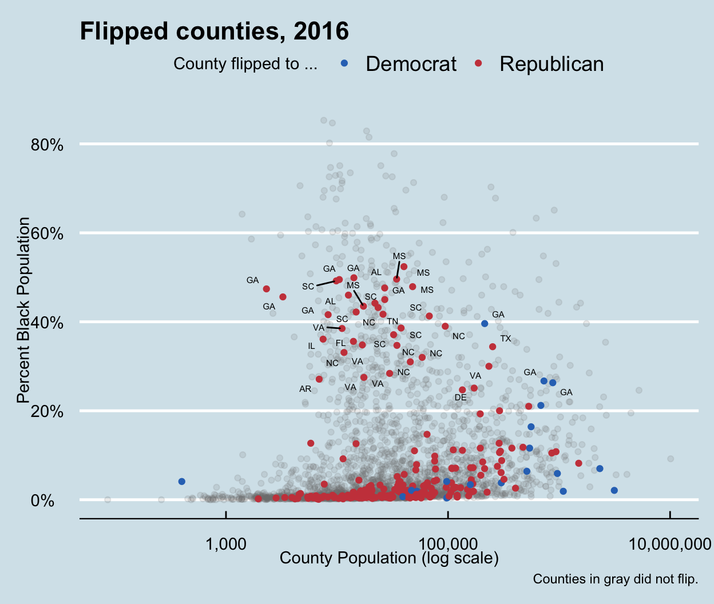
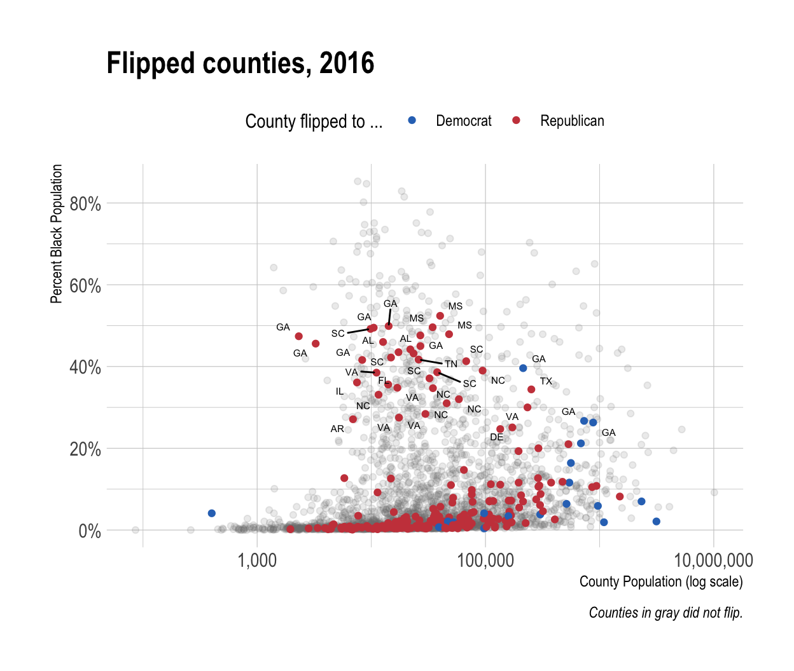

Refine your plots
R packages
Use color to your advantage
- You should choose a color palette based on the types of the data you are plotting.
- An unordered categorical variable (e.g., Sex or Country) requires distinct colors that wont be easily confused with one another.
- An ordered categorical variable (e.g., Level of Education) requires a graded color scheme of some kind running from less to more or earlier to later.
Use color to your advantage
We choose color palettes for mappings through one of the
scale_functions forcolororfill.RColorBrewerpackage provides a wide range of named color palettes.- You can access these colors by specifying the
scale_color_brewer()orscale_fill_brewer()functions withpaletteparameter.
- You can access these colors by specifying the
RColorBrewers sequential palettes

RColorBrewers diverging palettes
RColorBrewers qualitative palettes
Use color to your advantage
p <- ggplot(data = organdata,
mapping = aes(x = roads, y = donors, color = world))
p + geom_point(size = 2) + scale_color_brewer(palette = "Set2") +
theme(legend.position = "top")
Use color to your advantage
Use color to your advantage
p <- ggplot(data = organdata,
mapping = aes(x = roads, y = donors, color = world))
p + geom_point(size = 2) + scale_color_brewer(palette = "Pastel2") +
theme(legend.position = "top")
Use color to your advantage
Use color to your advantage
p <- ggplot(data = organdata,
mapping = aes(x = roads, y = donors, color = world))
p + geom_point(size = 2) + scale_color_brewer(palette = "Dark2") +
theme(legend.position = "top")
Use color to your advantage
Use color to your advantage
- We can also specify colors manually, via
scale_color_manual()orscale_fill_manual().- These functions take
valuesargument that can be specified as vector of color names or hex colors.
- These functions take
p <- ggplot(data = organdata,
mapping = aes(x = roads, y = donors, color = world))
p + geom_point(size = 2) +
scale_color_manual(values = c("#3c6ff8", "#afd68d", "#8467ad", "#82857f")) +
theme_minimal() + theme(legend.position = "top")
Use color to your advantage

Use color to your advantage
Even though colorblind people can recognize a wide range of colors, it might be hard to differentiate between certain colors.
dichromatpackage provides a range of safe palettes and some useful functions for helping you approximately see what your current palette might look like to a viewer with one of several different kinds of color blindness.
Default <- brewer.pal(5, "Set2")
types <- c("deutan", "protan", "tritan")
names(types) <- c("Deuteronopia", "Protanopia", "Tritanopia")
color_table <- types %>%
purrr::map(~ dichromat(Default, .x)) %>%
as_tibble() %>%
add_column(Default, .before = TRUE)
color_table
# A tibble: 5 4
Default Deuteronopia Protanopia Tritanopia
<chr> <chr> <chr> <chr>
1 #66C2A5 #AEAEA7 #BABAA5 #82BDBD
2 #FC8D62 #B6B661 #9E9E63 #F29494
3 #8DA0CB #9C9CCB #9E9ECB #92ABAB
4 #E78AC3 #ACACC1 #9898C3 #DA9C9C
5 #A6D854 #CACA5E #D3D355 #B6C8C8 Use color to your advantage
- Lets compare a default color palette with an approximation of how the same palette appears to people with one of three kinds of color blindness.
color_comp(color_table)
Use color to your advantage
RColorBrewerprovides the color-blind friendly pallets.
display.brewer.all(n=NULL, type="all", select=NULL, exact.n=TRUE, colorblindFriendly=TRUE)
Use color to your advantage
RColorBrewerprovides the color-blind friendly pallets.
brewer.pal.info
maxcolors category colorblind
BrBG 11 div TRUE
PiYG 11 div TRUE
PRGn 11 div TRUE
PuOr 11 div TRUE
RdBu 11 div TRUE
RdGy 11 div FALSE
RdYlBu 11 div TRUE
RdYlGn 11 div FALSE
Spectral 11 div FALSE
Accent 8 qual FALSE
Dark2 8 qual TRUE
Paired 12 qual TRUE
Pastel1 9 qual FALSE
Pastel2 8 qual FALSE
Set1 9 qual FALSE
Set2 8 qual TRUE
Set3 12 qual FALSE
Blues 9 seq TRUE
BuGn 9 seq TRUE
BuPu 9 seq TRUE
GnBu 9 seq TRUE
Greens 9 seq TRUE
Greys 9 seq TRUE
Oranges 9 seq TRUE
OrRd 9 seq TRUE
PuBu 9 seq TRUE
PuBuGn 9 seq TRUE
PuRd 9 seq TRUE
Purples 9 seq TRUE
RdPu 9 seq TRUE
Reds 9 seq TRUE
YlGn 9 seq TRUE
YlGnBu 9 seq TRUE
YlOrBr 9 seq TRUE
YlOrRd 9 seq TRUELayer color and text together
Color is very useful when we want to pick out or highlight some aspect of our data.
Lets do a simple exploratory analysis on the relationship between politics and race using
color.First, use
county_datawith a value of No on theflippedvariable to draw a scatter plot on thepop-black/100plane.
party_colors <- c("#2E74C0", "#CB454A") # DEM Blue and REP Red
p0 <- ggplot(data = subset(county_data,
flipped == "No"),
mapping = aes(x = pop, y = black/100) )
p1 <- p0 + geom_point(alpha = 0.15, color = "gray50") +
scale_x_log10(labels=scales::comma)
p1
Layer color and text together

Layer color and text together
- Next, we add a second
geom_point()layer.- We choose the data with Yes counties on the
flippedvariable. - We map the
partywinner16variable to thecoloraesthetic usingscale_color_manual(values = party_colors).
- We choose the data with Yes counties on the
p2 <- p1 + geom_point(data = subset(county_data,
flipped == "Yes"),
mapping = aes(x = pop, y = black/100,
color = partywinner16)) +
scale_color_manual(values = party_colors)
p2
Layer color and text together
Layer color and text together
- Next, we set the y-axis scale and the labels.
p3 <- p2 + scale_y_continuous(labels=scales::percent) +
labs(color = "County flipped to ... ",
x = "County Population (log scale)",
y = "Percent Black Population",
title = "Flipped counties, 2016",
caption = "Counties in gray did not flip.")
p3
Layer color and text together
Layer color and text together
- Finally, we add a third layer using the
geom_text_repel()function.- We are interested in the
flippedcounties that have with a relatively high percentage of African-American residents (black> 25).
- We are interested in the
p4 <- p3 + geom_text_repel(data = subset(county_data,
flipped == "Yes" &
black > 25),
mapping = aes(x = pop,
y = black/100,
label = state), size = 2)
p4 + theme_minimal() +
theme(legend.position="top")
Layer color and text together

Layer color and text together
- We are now able to see the mappings, scales, and layers from the ggplot figures:
- Which variables are mapped to
xandy - Which to to
color,fill,shape,label, and so on. - What
geomswere used to produce them? - How have the scales been adjusted?
- Are the axes transformed?
- Are the fill and color legends combined?
- What is the base layer?
- What has been drawn on top of it, and in what order?
- Which upper layers are formed from subsets of the data?
- Which are new datasets?
- Are there annotations?
- Which variables are mapped to
Change the appearance of plots with themes
- The following lists the ggplot themes:
| theme | theme |
|---|---|
| theme_grey() | theme_gray() |
| theme_bw() | theme_linedraw() |
| theme_light() | theme_dark() |
theme_minimal() |
theme_classic() |
| theme_void() | theme_test() |
ggthemespackage providestheme_economist()andtheme_wsj().
Change the appearance of plots with themes
- If we want to change the overall look of it all at once, we can do that using ggplots theme engine.
- Themes can be turned on or off using the
theme_set()function.
- Themes can be turned on or off using the
theme_set(theme_economist())
p4 + theme(legend.position="top")
Change the appearance of plots with themes
Change the appearance of plots with themes
theme_set(theme_wsj())
p4 + theme(plot.title = element_text(size = rel(0.6)),
legend.title = element_text(size = rel(0.35)),
plot.caption = element_text(size = rel(0.35)),
legend.position = "top")
Change the appearance of plots with themes
Change the appearance of plots with themes
- We can adjust the text size using
element_text()function.
theme_set(theme_wsj())
p4 + theme(plot.title = element_text(size = rel(0.6)),
legend.title = element_text(size = rel(0.35)),
plot.caption = element_text(size = rel(0.35)),
legend.position = "top")
Change the appearance of plots with themes
Change the appearance of plots with themes
cowplotpackage providestheme_cowplot().
# install.packages("cowplot")
library(cowplot)
theme_set(theme_cowplot())
p4 + theme(legend.position="top")
Change the appearance of plots with themes

Change the appearance of plots with themes
hrbrthemespackage providestheme_ipsum(), which is similar to the theme used in our textbook.
# install.packages("hrbrthemes")
library(hrbrthemes)
theme_set(theme_ipsum())
p4 + theme(legend.position="top")
Change the appearance of plots with themes
Change the appearance of plots with themes
- We can also change font and color of the text.
p4 + theme(legend.position = "top",
plot.title = element_text(size=rel(2),
lineheight=.5,
family="Times",
face="bold.italic",
colour="orange"),
axis.text.x = element_text(size=rel(1.1),
family="Courier",
face="bold",
color="purple"))
Change the appearance of plots with themes
Change the appearance of plots with themes
- We can also use
element_blank()to remove a number of elements by naming them and making them disappear.
p4 + theme(legend.position = "top",
plot.title = element_text(size=rel(2),
lineheight=.5,
family="Times",
face="bold.italic",
colour="orange"),
axis.text.x = element_blank())
Change the appearance of plots with themes
Change the appearance of plots with themes
Lets create an effective small multiple of the age distribution of General Social Survey (GSS) respondents over the years using
gss_londata.First, we need to calculate the mean age of the respondents for each year of interest.
We will look at distributions about every four years since the beginning.
Change the appearance of plots with themes
p <- ggplot(data = subset(gss_lon, year %in% yrs),
mapping = aes(x = age))
p1 <- p + geom_density(fill = "gray20", color = FALSE,
alpha = 0.9, mapping = aes(y = ..scaled..)) +
geom_vline(data = subset(mean_age, year %in% yrs),
aes(xintercept = xbar), color = "white", size = 0.5) +
geom_text(data = subset(mean_age, year %in% yrs),
aes(x = xbar, y = y, label = xbar), nudge_x = 7.5,
color = "white", size = 3.5, hjust = 1) +
geom_text(data = subset(yr_labs, year %in% yrs),
aes(x = x, y = y, label = year)) +
facet_grid(year ~ ., switch = "y")
The first
geom_text()call uses anudgeargument to push the label slightly to the right of its x-value (nudge_x).In the
facet_grid()we use theswitchargument to move the labels to the left.
Change the appearance of plots with themes
- With the structure of the plot in place, we then style the elements in the way that we want, using a series of instructions to
theme().
p1 + theme(plot.title = element_text(size = 16),
axis.text.x= element_text(size = 12),
axis.line.x = NULL,
axis.title.y=element_blank(),
axis.text.y=element_blank(),
axis.ticks.y = element_blank(),
strip.background = element_blank(),
strip.text.y = element_blank(),
panel.grid.major = element_blank(),
panel.grid.minor = element_blank()) +
labs(x = "Age",
y = NULL,
title = "Age Distribution of\nGSS Respondents")
Change the appearance of plots with themes
Change the appearance of plots with themes
ggridgesallows the distributions to overlap vertically.- It is especially useful for repeated distributional measures that change in a clear direction.
p <- ggplot(data = gss_lon,
mapping = aes(x = age, y = factor(year, levels = rev(unique(year)),
ordered = TRUE)))
p + geom_density_ridges(alpha = 0.6, fill = "lightblue", scale = 1.5) +
scale_x_continuous(breaks = c(25, 50, 75)) +
scale_y_discrete(expand = c(0.01, 0)) +
labs(x = "Age", y = NULL,
title = "Age Distribution of\nGSS Respondents") +
theme_ridges() +
theme(title = element_text(size = 16, face = "bold"))
The
expandargument inscale_y_discrete()adjusts the scaling of the y-axis slightly.theme_ridges()makes the labels become aligned properly.The degree of overlap in the distributions is controlled by the
scaleargument in thegeom_density_ridge().
Change the appearance of plots with themes